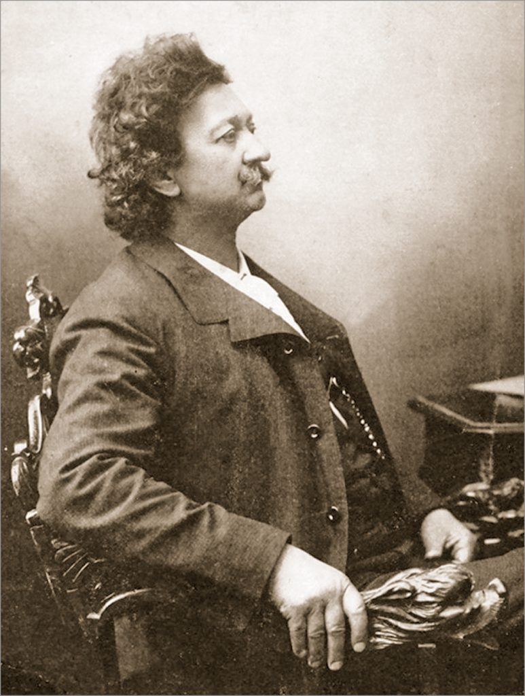
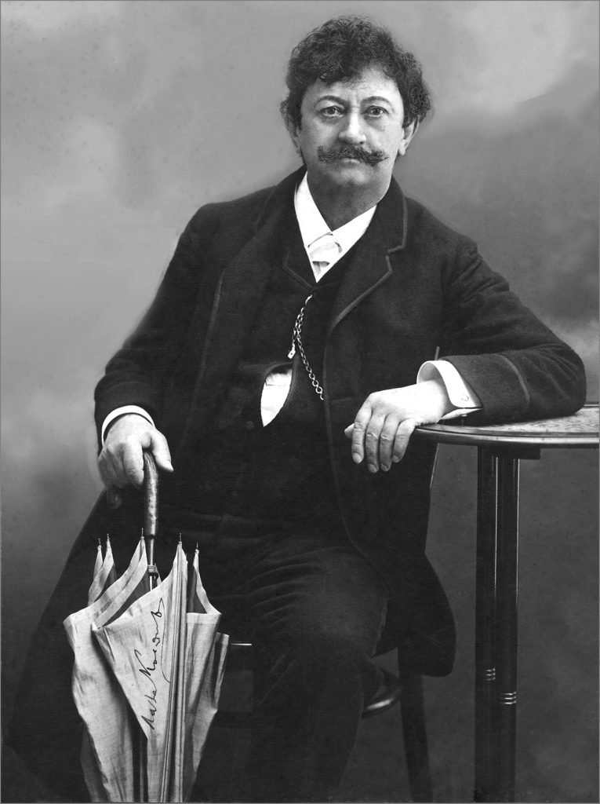
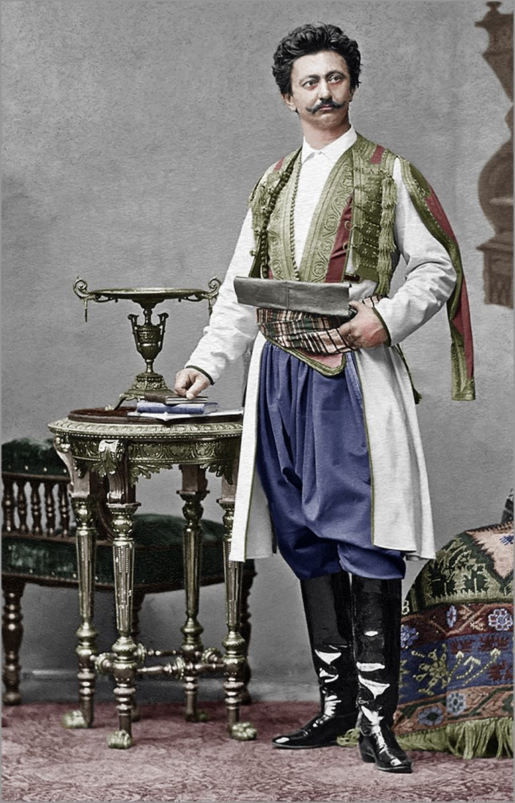

Биографија
Лазар Лаза Костић (Ковиљ, 31. јануар / 12. фебруар 1841 — Беч, 26. новембар 1910) био је српски ерудита. Бавио се књижевношћу (поезијом и прозом), правним наукама, новинарством и естетиком. По образовању је био доктор правних наука. Као политички човек и јавни радник Костић је вршио снажан утицај на српско друштво свога времена. Он је један од оснивача и вођа „Уједињене омладине“,
Фотографије
  Песме
„Деца расту као трава,
свако јутро друга глава...“
„Ђаче моје, руко моја,
ко ће знати шта нас чека —
ал’ што будем добар ђак,
то ми нико узет нека!“
Занимљивости
- Надимак „Змај“ је узео по „Змајевској улици“ у Београду, у којој је живео.
- Био је лекар по струци, али се више прославио као песник и хуманиста.
- Основао је више хумористичних листова, укључујући и чувени „Змај“.